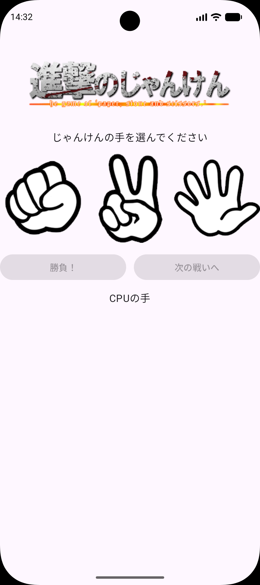
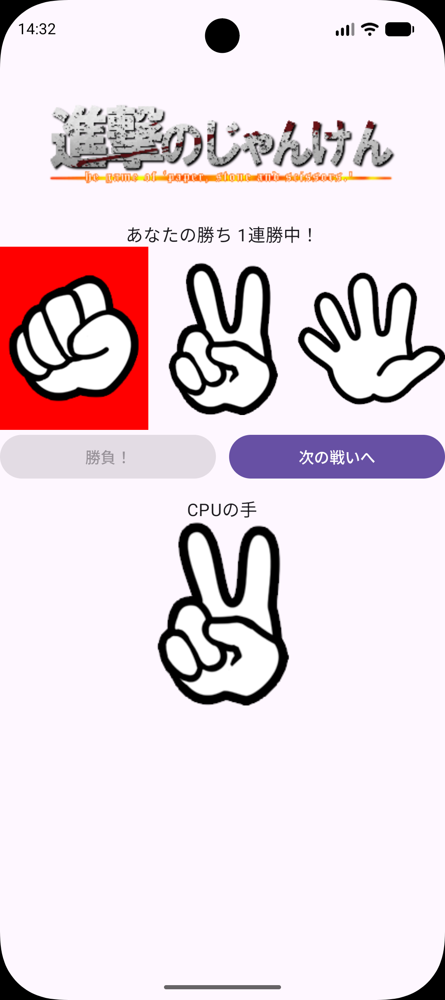
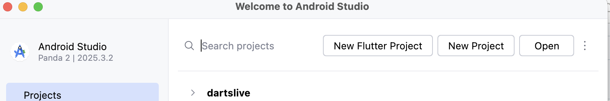
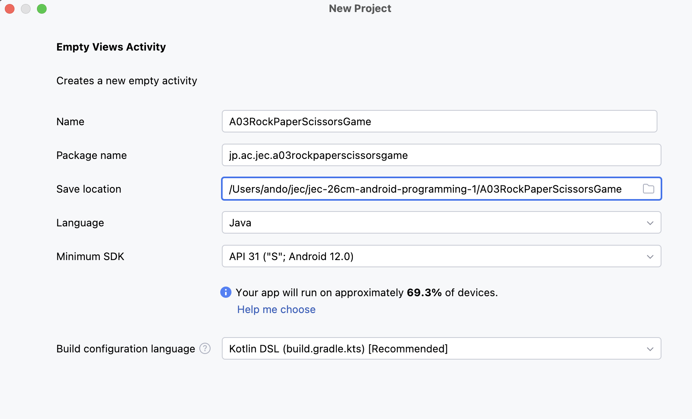
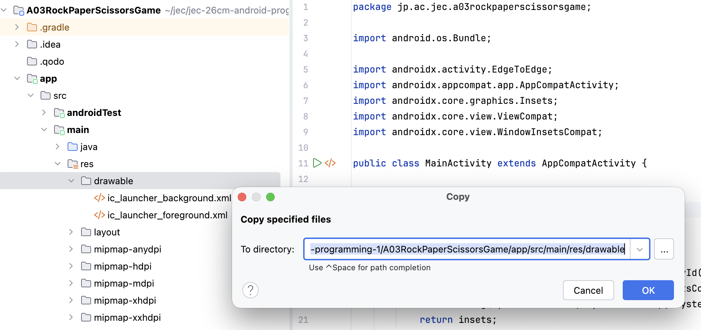
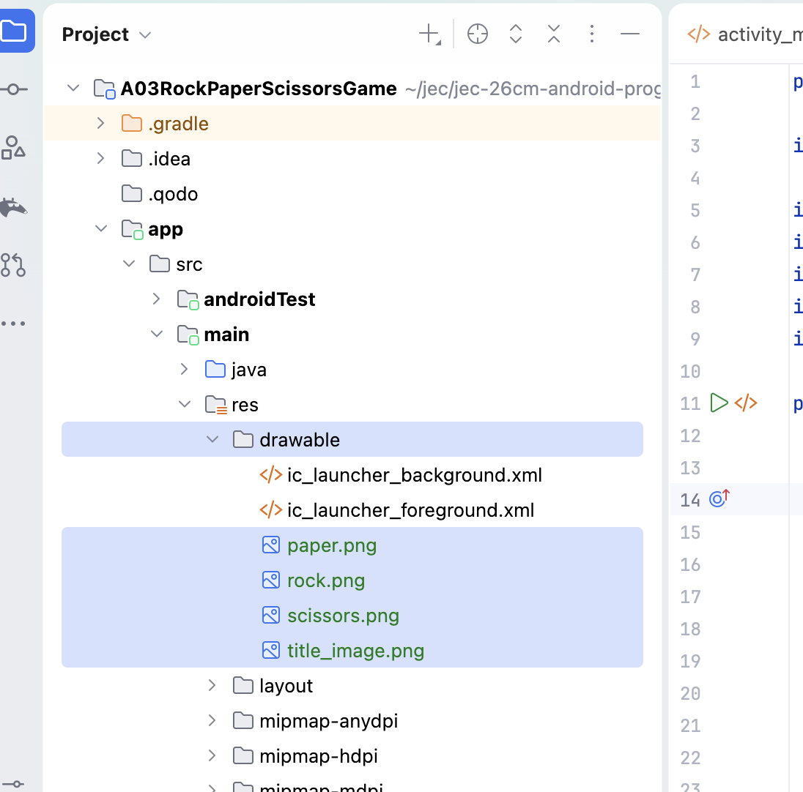
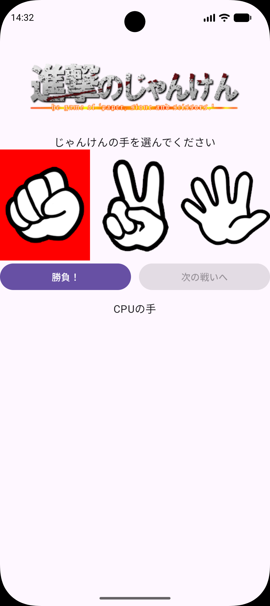
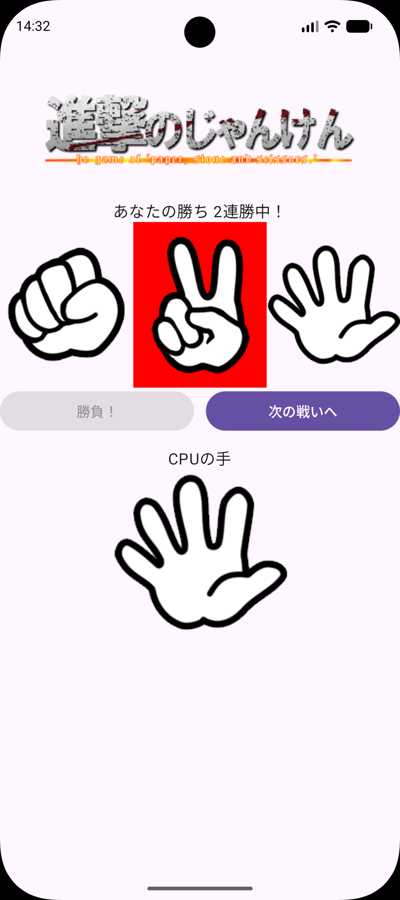

ROCK PAPER SCISSORS GAME
じゃんけんゲームを
作ろう
手を選ぶ。CPUと勝負する。勝ちを数える。
画像と配列を使って、何度も遊べるゲームへ。
今日のゴール
A01・A02で学んだ「XMLで画面を作る」「Javaでクリックを処理する」「フィールドで値を覚える」を使い、CPUとじゃんけんをするゲームを作ります。手の画像を押して選び、「勝負！」で結果を表示します。勝ち続けると連勝数が増えます。
{kind=link}

{kind=link}

できるようになること
- 画像をプロジェクトに追加し、ImageViewで表示する。
- 配列とfor文で3つの画像に同じクリック処理を付け、選んだ手の番号を覚える。
- 乱数でCPUの手を決め、計算式とswitch文で勝ち・負け・引き分けと連勝数を表示する。
手の番号は 0：グー、1：チョキ、2：パー です。CPUの手は毎回ランダムに決まるため、画像と違う結果になっても構いません。
90分×3コマで進めます
| 授業 | 範囲 | 終了時にできること |
|---|---|---|
| 1コマ目 | STEP 0〜4 | 画像を追加し、ゲームの画面を作る。 |
| 2コマ目 | STEP 5〜7 | 手を選び、CPUの手を出し、次の戦いへ戻せることを確かめる。 |
| 3コマ目 | STEP 8〜10 | 勝敗と連勝数を表示し、ミニ練習・動作確認・提出を行う。 |
各コマに再実行と個別確認の時間を含みます。予習は不要です。
毎回、自分で新規作成します
作る場所は Documents/Android1/A03RockPaperScissorsGame です。完成プロジェクトは初回から開けます。STEP 2で使う画像も、完成プロジェクトのZIPから取り出します。
完成アプリの操作
| 状態 | 手の画像 | 勝負！ | 次の戦いへ | CPUの手 |
|---|---|---|---|---|
| 起動直後・次の戦いへの後 | 押せる | 押せない | 押せない | 表示しない |
| 手を選んだ後 | 押せる（選び直せる） | 押せる | 押せない | 表示しない |
| 勝負！の後 | 押しても変わらない | 押せない | 押せる | 表示する |
選んだ手は背景が赤くなります。次の戦いへを押すと、連勝数を覚えたまま、起動直後と同じ表示に戻ります。
画面回転について
各単元では画面回転時のデータ保持と横画面のレイアウトを扱いません。回転などでActivityが作り直されると、選んだ手と連勝数は初期状態に戻ります。横向きでは画面の下の部分が見えなくなる場合があるため、縦向きで使います。この観点は別単元の演習アプリで検証します。
ここで止まって、確認
できたらチェックします。困ったときはSTEP番号と画面を先生に見せましょう。
プロジェクトを作って実行
授業環境はMacと Android Studio Panda 2 | 2025.3.2 です。A01・A02とは別のプロジェクトを作ります。
- Android Studioの New Project をクリックします。別のプロジェクトを開いているときは File → New → New Project を選びます。
{kind=link}

- Phone and Tablet → Empty Views Activity → Next の順に選びます。名前に Views があることを確認します。

| 項目 | 入力・選択する内容 |
|---|---|
| Name | A03RockPaperScissorsGame |
| Package name | jp.ac.jec.a03rockpaperscissorsgame（すべて小文字） |
| Save location | /Users/ユーザ名/Documents/Android1/A03RockPaperScissorsGame |
| Language | Java |
| Minimum SDK | API 31（Android 12.0） |
| Build configuration language | Kotlin DSL（build.gradle.kts） |
{kind=link}

- Finderの 移動 → ホーム で自分のユーザ名を確認します。書類（Documents）に
Android1フォルダがなければ作ります。 - 表の値と保存先を確認し、Finish をクリックします。
ユーザ名は自分の名前に置き換えます。 - Gradle Sync が完了するまで待ちます。
- 共通資料：Auto ImportのJava設定を確認します。
この単元で使う場所
| 役割 | Project表示で開く場所 |
|---|---|
| 画像 | app/src/main/res/drawable |
| 画面（XML） | app/src/main/res/layout/activity_main.xml |
| 動き（Java） | app/src/main/java/jp/ac/jec/a03rockpaperscissorsgame/MainActivity.java |
左の一覧が見えないときは View → Tool Windows → Project を開きます。一覧の上の表示名が Project になっていることを確認します。パッケージのフォルダが jp.ac.jec.a03rockpaperscissorsgame とまとめて表示される場合もあります。
変更前に1回Runする
- 共通資料：エミュレータに従って端末を起動します。
- 上部で app と jec_26cm_android1_Pixel 9a を選び、Run ▶ を押します。
- Hello World! が表示されれば成功です。
MainActivity.ktができたとき
先生に画面を見せ、Empty Views Activity / Javaの選択を確認します。
ここで止まって、確認
できたらチェックします。困ったときはSTEP番号と画面を先生に見せましょう。
画像をdrawableに追加
追加する場所：app/src/main/res/drawable
ゲームで使う4つの画像を、自分のプロジェクトに入れます。res/drawable は、アプリで表示する画像を置くフォルダです。
| ファイル名 | 使う場所 | XMLでの名前 | Javaでの名前 |
|---|---|---|---|
| title_image.png | 画面上部のタイトル | @drawable/title_image | （使わない） |
| rock.png | グー | @drawable/rock | R.drawable.rock |
| scissors.png | チョキ | @drawable/scissors | R.drawable.scissors |
| paper.png | パー | @drawable/paper | R.drawable.paper |
名前はファイル名から .png を取ったものです。drawableのファイル名には、小文字の英字・数字・_（アンダースコア） だけを使います。
① 完成プロジェクトのZIPから画像を取り出す
- 完成プロジェクト A03RockPaperScissorsGame.zip をダウンロードし、展開します。
- できた
A03RockPaperScissorsGameフォルダを、見本の置き場所/Users/ユーザ名/Documents/Android1/samplesに移動します。samplesフォルダがなければ作ります。 - Finderで
samples/A03RockPaperScissorsGame/app/src/main/res/drawableを開きます。 - ⌘ を押しながら、
paper.png・rock.png・scissors.png・title_image.pngの4つをクリックして選び、⌘ C でコピーします。ic_launcherで始まるファイルは選びません。
② 自分のプロジェクトに貼り付ける
- Android Studioに戻り、自分の
A03RockPaperScissorsGameを開いていることを確認します。 - Project表示で
app/src/main/res/drawableフォルダをクリックして選び、⌘ V で貼り付けます。 - Copy の画面が出たら、To directory を確認します。末尾が
A03RockPaperScissorsGame/app/src/main/res/drawableで、途中にsamplesがなければ OK を押します。
{kind=link}

{kind=link}

貼り付けた場所を間違えたとき
layout や mipmap など別のフォルダに入った画像は、Project表示で選んで ⌘ Delete で削除し、もう一度 drawable に貼り付けます。見本の samples 側のプロジェクトには貼り付けません。
Runで確かめる
画像を追加しただけでは、画面は変わりません。Runして Hello World! が表示され、ビルドエラーが出なければ成功です。
ここで止まって、確認
できたらチェックします。困ったときはSTEP番号と画面を先生に見せましょう。
タイトルと3つの手を並べる
変更するファイル：app/src/main/res/layout/activity_main.xml
まず上半分を作ります。Code 表示に切り替え、XMLの中で ⌘ A → 貼り付けを行い、ファイル全体を置き換えます。
<?xml version="1.0" encoding="utf-8"?>
<LinearLayout xmlns:android="http://schemas.android.com/apk/res/android"
xmlns:tools="http://schemas.android.com/tools"
android:id="@+id/main"
android:layout_width="match_parent"
android:layout_height="match_parent"
android:gravity="center_horizontal"
android:orientation="vertical"
tools:context=".MainActivity">
<ImageView
android:layout_width="wrap_content"
android:layout_height="wrap_content"
android:contentDescription="@null"
android:src="@drawable/title_image" />
<TextView
android:id="@+id/txt_message"
style="@style/TextAppearance.Material3.BodyLarge"
android:layout_width="wrap_content"
android:layout_height="wrap_content"
android:text="じゃんけんの手を選んでください" />
<LinearLayout
android:layout_width="match_parent"
android:layout_height="wrap_content"
android:orientation="horizontal">
<ImageView
android:id="@+id/img_rock"
android:layout_width="0dp"
android:layout_height="wrap_content"
android:layout_weight="1"
android:contentDescription="@null"
android:src="@drawable/rock" />
<ImageView
android:id="@+id/img_scissors"
android:layout_width="0dp"
android:layout_height="wrap_content"
android:layout_weight="1"
android:contentDescription="@null"
android:src="@drawable/scissors" />
<ImageView
android:id="@+id/img_paper"
android:layout_width="0dp"
android:layout_height="wrap_content"
android:layout_weight="1"
android:contentDescription="@null"
android:src="@drawable/paper" />
</LinearLayout>
</LinearLayout>| 新しい指定 | 意味 |
|---|---|
| ImageView（イメージビュー） | 画像を表示する部品。 |
| android:src="@drawable/rock" | STEP 2で追加した rock.png を表示する。.png は書かない。 |
| android:contentDescription="@null" | 画面読み上げ用の説明文。この単元では説明文を付けない指定にして、警告を出さないようにする。 |
| style="@style/TextAppearance.Material3.BodyLarge" | Material 3の「大きめの本文」の文字スタイルを使う。 |
| android:layout_width="0dp" と android:layout_weight="1" | 横幅を比率で分ける。3つとも1なので、横幅を3等分する。 |
親の orientation="vertical" がタイトル・メッセージ・手の行を縦に並べ、手の行の orientation="horizontal" が3つの画像を横に並べます。A02の数字ボタンと同じ入れ子の形です。
3つの手のidは img_rock・img_scissors・img_paper です。この グー → チョキ → パー の順番を、あとのJavaでも使います。android:id="@+id/main" はJavaのひな形でも使うため残します。
12dpの余白について
このXMLには padding="12dp" があります。ひな形のJavaにある v.setPadding(...) が実行時の余白を上書きするため、手の画像が画面の端まで表示されることがあります。教材では、このひな形をそのまま使います。
Runで確かめる
タイトル画像、「じゃんけんの手を選んでください」、グー・チョキ・パーの画像が上から表示されれば成功です。まだ画像を押しても何も起きません。
@drawable/rock などが赤いときは、STEP 2の画像の場所とファイル名を確認します。文字を直接書いたことによる Hardcoded text の警告は、A01・A02と同様に授業ではそのまま進めます。
ここで止まって、確認
できたらチェックします。困ったときはSTEP番号と画面を先生に見せましょう。
ボタンとCPUの手の場所
変更するファイル：activity_main.xml
下半分に、2つのボタンとCPUの手を表示する場所を作ります。XMLの最後の </LinearLayout> の直前に追加します。STEP 3のタイトルや手の画像は残します。
<LinearLayout
android:layout_width="match_parent"
android:layout_height="wrap_content"
android:orientation="horizontal">
<Button
android:id="@+id/btn_start"
android:layout_width="0dp"
android:layout_height="wrap_content"
android:layout_marginEnd="12dp"
android:layout_weight="1"
android:enabled="false"
android:text="勝負！"
tools:ignore="ButtonStyle" />
<Button
android:id="@+id/btn_next"
android:layout_width="0dp"
android:layout_height="wrap_content"
android:layout_weight="1"
android:enabled="false"
android:text="次の戦いへ"
tools:ignore="ButtonStyle" />
</LinearLayout>
<TextView
style="@style/TextAppearance.Material3.BodyLarge"
android:layout_width="wrap_content"
android:layout_height="wrap_content"
android:layout_marginTop="12dp"
android:text="CPUの手" />
<ImageView
android:id="@+id/img_cpu"
android:layout_width="wrap_content"
android:layout_height="wrap_content"
android:contentDescription="@null" />| 指定 | 意味 |
|---|---|
| btn_start / btn_next | 「勝負！」と「次の戦いへ」のボタン。Javaから探すための名前。 |
| android:enabled="false" | 最初はボタンを押せないようにする。 |
| android:layout_marginEnd="12dp" | 勝負！の右側に12dpのすき間を作る。2つのボタンの幅は layout_weight で半分ずつ。 |
| img_cpu | CPUの手を表示する場所。android:src がないので、最初は何も見えない。画像はJavaで設定する。 |
tools:ignore="ButtonStyle" はエディタの警告を抑える指定で、クリックの処理ではありません。「CPUの手」の文字はJavaで変えないため、idを付けていません。
Runで確かめる
画面の下に「勝負！」「次の戦いへ」と「CPUの手」が表示されます。2つのボタンは灰色で押せません。
1コマ目はここまで
保存してからもう一度Runします。画面の部品のidを、先生に1つずつ指さして説明しましょう。次回も自分の Documents/Android1/A03RockPaperScissorsGame を開きます。
ここで止まって、確認
できたらチェックします。困ったときはSTEP番号と画面を先生に見せましょう。
手を選ぶ（配列とfor文）
変更するファイル：MainActivity.java
前回の画面をRunして確認してから始めます。押した手の背景を赤くし、何番の手を選んだかをフィールドに覚えます。
① クラスの中、onCreateの外に1行追加
public class MainActivity extends AppCompatActivity { のすぐ下、@Override より上に追加します。
private int selectedHand = -1; // -1:未選択 0:グー 1:チョキ 2:パーselectedHand は、選んだ手の番号を覚えるフィールドです。-1 は「まだ選んでいない」という意味です。この値は、クリックの処理（v -> { ... }）の中で書き換えます。onCreate の中で作ったローカル変数は、クリックの処理の中で変更できないため、フィールドにします。A02の correctNo などと同じ理由です。あとで出てくる imageViews や btnStart は、クリックの処理の中で読むだけなので、ローカル変数のままで構いません。
② 画面の部品を取得する
onCreate の中で、ひな形の return insets; に続く }); の下、onCreate を閉じる } より上に追加します。
var txtMessage = (TextView) findViewById(R.id.txt_message);
var imgCpu = (ImageView) findViewById(R.id.img_cpu);
var btnStart = findViewById(R.id.btn_start);
var btnNext = findViewById(R.id.btn_next);
var imageViews = new ImageView[]{
findViewById(R.id.img_rock),
findViewById(R.id.img_scissors),
findViewById(R.id.img_paper)
};| コード | 意味 |
|---|---|
| (ImageView) findViewById(R.id.img_cpu) | 表示する画像を変えるため、ImageViewとして扱う。 |
| btnStart / btnNext | クリック登録と有効・無効の切り替えだけを使うため、A02と同じくキャストしない。 |
| new ImageView[]{ ... } | 3つの手の画像を、ImageViewの配列にまとめる。 |
配列の番号は0から始まります。{ } に書いた順番で、imageViews[0] がグー、imageViews[1] がチョキ、imageViews[2] がパーです。この番号が、そのまま手の番号になります。
Auto Importで android.widget.ImageView と android.widget.TextView を追加します。赤字が残るときは名前にカーソルを置いて ⌥ Enter で候補を確認します。txtMessage などが灰色で表示されるのは、まだ使っていないためです。
③ 3つの画像にクリック処理を付ける
②で追加した配列の }; の下に追加します。
for (var imageView : imageViews) {
imageView.setOnClickListener(v -> {
btnStart.setEnabled(true);
for (var i = 0; i < imageViews.length; i++) {
if (imageViews[i] == v) {
v.setBackgroundColor(Color.RED);
// 選択状態を保持
selectedHand = i;
} else {
imageViews[i].setBackground(null);
}
}
});
}Color のimportは android.graphics.Color です。
| コード | 意味 |
|---|---|
| for (var imageView : imageViews) | 配列から画像を1つずつ取り出し、クリック処理を登録する。A02の数字ボタンと同じ拡張for文。 |
| v | 押された画像。 |
| btnStart.setEnabled(true) | 手を選んだので、勝負！を押せるようにする。 |
| for (var i = 0; i < imageViews.length; i++) | i を0・1・2と変えながら繰り返す。imageViews.length は配列の数（3）。 |
| imageViews[i] == v | i番目の画像が、押された画像と同じ部品かを比べる。 |
| v.setBackgroundColor(Color.RED) | 押された画像の背景を赤にする。 |
| selectedHand = i | 押された画像の番号をフィールドに覚える。 |
| imageViews[i].setBackground(null) | 押されていない画像の背景を消す。前に選んだ赤もここで消える。 |
番号付きのfor文を読む
| チョキを押したとき | imageViews[i] == v | 実行すること |
|---|---|---|
| i = 0（グー） | false | グーの背景を消す。 |
| i = 1（チョキ） | true | チョキの背景を赤にし、selectedHand を1にする。 |
| i = 2（パー） | false | パーの背景を消す。 |
| i = 3 | （条件 3 < 3 がfalse） | 繰り返しを終える。 |
外側の拡張for文は画面を作るときに3回実行され、3つの画像に同じ処理を登録します。内側の番号付きfor文は、画像を押したときに実行されます。
Runで確かめる
- グーを押すと、グーの背景が赤になり、勝負！が押せるようになります。
- 続けてパーを押すと、赤がパーに移ります。赤い手はいつも1つだけです。
- 勝負！を押しても、まだ何も起きません。
{kind=link}

ここで止まって、確認
できたらチェックします。困ったときはSTEP番号と画面を先生に見せましょう。
CPUの手を出す
変更するファイル：MainActivity.java
勝負！を押したら、手を選べないようにしてから、CPUの手をランダムに決めて表示します。勝ち負けの判定はSTEP 8で追加します。
STEP 5の3つの画像の処理を閉じる、拡張for文の最後の } の下に追加します。onCreate を閉じる } より上です。
btnStart.setOnClickListener(v -> {
for (var item : imageViews) {
item.setClickable(false);
}
btnStart.setEnabled(false);
btnNext.setEnabled(true);
var cpu = ThreadLocalRandom.current().nextInt(3);// CPUの手 0:グー 1:チョキ 2:パー
var item = new int[]{R.drawable.rock, R.drawable.scissors, R.drawable.paper};
imgCpu.setVisibility(View.VISIBLE);
imgCpu.setImageResource(item[cpu]);
});importは android.view.View と java.util.concurrent.ThreadLocalRandom です。
| コード | 意味 |
|---|---|
| item.setClickable(false) | 3つの画像を押せないようにする。勝負のあとに手を選び直せない。 |
| btnStart.setEnabled(false) / btnNext.setEnabled(true) | 勝負！を押せなくし、次の戦いへを押せるようにする。 |
| ThreadLocalRandom.current().nextInt(3) | 0以上、3未満の整数を選ぶ。CPUの手は0・1・2のどれか。 |
| new int[]{R.drawable.rock, R.drawable.scissors, R.drawable.paper} | 3つの画像のidを配列にまとめる。[0]グー、[1]チョキ、[2]パー。 |
| imgCpu.setVisibility(View.VISIBLE) | CPUの手の画像を見える状態にする。 |
| imgCpu.setImageResource(item[cpu]) | 選ばれた番号の画像を表示する。cpu が1なら scissors.png。 |
A02の nextInt(1, 10) は1〜9でした。今回の nextInt(3) は0から始まるので、配列の番号にそのまま使えます。画像idの配列も、STEP 5の imageViews と同じ グー → チョキ → パー の順番です。
2つのitemは別の変数
for文の (var item : imageViews) の item は、for文の { } の中だけで使える名前です。for文の下の var item = new int[]{...} は、画像idの配列を入れる別の変数です。
Runで確かめる
- 手を選んで勝負！を押すと、「CPUの手」の下に画像が出ます。
- 勝負！は押せなくなり、次の戦いへが押せるようになります。
- 手の画像を押しても、赤い背景は動きません。
- メッセージはまだ変わりません。次の戦いへを押しても、まだ何も起きません。
もう一度試すときは、Run ▶ でアプリを起動し直します。何回か試し、CPUの手が変わることを確認します。
仕様の確認：ThreadLocalRandom.nextInt、ImageView.setImageResource、View.setVisibility（Android公式）。
ここで止まって、確認
できたらチェックします。困ったときはSTEP番号と画面を先生に見せましょう。
次の戦いへ戻す
変更するファイル：MainActivity.java
次の戦いへを押したら、起動直後と同じ表示に戻し、もう一度手を選べるようにします。
STEP 5の画像のfor文の最後の } の下、STEP 6で追加した btnStart.setOnClickListener(v -> { の行の上に追加します。完成版と同じ順番にするためです。
btnNext.setOnClickListener(v -> {
for (var imageView : imageViews) {
imageView.setBackground(null);
imageView.setClickable(true);
}
btnStart.setEnabled(false);
btnNext.setEnabled(false);
imgCpu.setVisibility(View.INVISIBLE);
txtMessage.setText("じゃんけんの手を選んでください");
});| コード | 元に戻すもの |
|---|---|
| imageView.setBackground(null) | 選んだ手の赤い背景を消す。 |
| imageView.setClickable(true) | 勝負！で押せなくした画像を、また押せるようにする。 |
| btnStart.setEnabled(false) / btnNext.setEnabled(false) | 手を選ぶまで、2つのボタンを押せない状態にする。 |
| imgCpu.setVisibility(View.INVISIBLE) | CPUの手を見えなくする。表示する場所は残る。 |
| txtMessage.setText("じゃんけんの手を選んでください") | メッセージを最初の文に戻す。 |
ここでは selectedHand を-1に戻していません。手を選ぶまで勝負！を押せないため、前の番号が勝負に使われることはありません。
Runで確かめる
- 手を選ぶ → 勝負！ → 次の戦いへ の順に押します。
- 赤い背景とCPUの手が消え、2つのボタンが押せない状態に戻ります。
- もう一度、別の手を選んで勝負！できます。2〜3回くり返します。
2コマ目はここまで
保存してからもう一度Runします。次回はRunして、選ぶ → 勝負！ → 次の戦いへ をくり返せることを確かめてからSTEP 8へ進みます。
ここで止まって、確認
できたらチェックします。困ったときはSTEP番号と画面を先生に見せましょう。
勝ち負けと連勝数
変更するファイル：MainActivity.java
最後に、選んだ手とCPUの手を比べて結果を表示します。勝ち続けた回数も数えます。
① 連勝数のフィールドを追加
STEP 5で追加した private int selectedHand = -1; ... のすぐ下に追加します。
private int winCount;winCount は連続で勝った回数です。初期値を書かないので0から始まります。次の戦いへを押しても、このフィールドは0に戻しません。
② 結果を判定して表示する
勝負！の処理の中で、imgCpu.setImageResource(item[cpu]); の下、勝負！の処理を閉じる }); より上に追加します。
var result = (selectedHand - cpu + 3) % 3; // 結果は必ず 0, 1, 2 のいずれかになる
Log.d("MainActivity", "selectedHandIndex: " + selectedHand + ", cpu: " + cpu + ", result: " + result);
switch (result) {
case 0: // 引き分け
winCount = 0;
txtMessage.setText("引き分け");
break;
case 1: // プレイヤーの負け
winCount = 0;
txtMessage.setText("あなたの負け");
break;
case 2: // プレイヤーの勝ち
winCount++;
txtMessage.setText("あなたの勝ち " + winCount + "連勝中！");
break;
}追加のimportは android.util.Log です。
計算式で勝ち負けを決める
グーはチョキに、チョキはパーに、パーはグーに勝ちます。番号で見ると 0 → 1 → 2 → 0 の順に、左の手が右の手に勝ちます。% は割り算の余りを求める記号です。たとえば 5 % 3 は2です。
| あなた ＼ CPU | 0：グー | 1：チョキ | 2：パー |
|---|---|---|---|
| 0：グー | (0 − 0 + 3) % 3 = 0 引き分け | (0 − 1 + 3) % 3 = 2 勝ち | (0 − 2 + 3) % 3 = 1 負け |
| 1：チョキ | (1 − 0 + 3) % 3 = 1 負け | (1 − 1 + 3) % 3 = 0 引き分け | (1 − 2 + 3) % 3 = 2 勝ち |
| 2：パー | (2 − 0 + 3) % 3 = 2 勝ち | (2 − 1 + 3) % 3 = 1 負け | (2 − 2 + 3) % 3 = 0 引き分け |
結果は 0：引き分け、1：負け、2：勝ち の3つだけです。selectedHand - cpu は −2〜2 になります。Javaでは -1 % 3 が −1 になるため、先に3を足してから余りを求めます。
switch文で表示を分ける
| コード | 意味 |
|---|---|
| switch (result) | result の値によって、実行する場所を選ぶ。 |
| case 0: | result が0のときに、ここから実行する。 |
| break; | そのcaseの処理を終え、switch文を抜ける。書き忘れると下のcaseも実行される。 |
| winCount = 0 | 引き分け・負けのとき、連勝数を0に戻す。 |
| winCount++ | 勝ったとき、連勝数を1増やしてから表示する。 |
| Log.d("MainActivity", ...) | 選んだ手・CPUの手・結果の番号をLogcatに出す。A01で使ったログと同じ。 |
A02のif文は「条件がtrueかfalseか」で分けました。switch文は「1つの値が0か1か2か」で分けるときに読みやすくなります。
{kind=link}

Runで確かめる
- 共通資料：Logcatに従ってLogcatを開き、検索欄を次の文字にします。
package:jp.ac.jec.a03rockpaperscissorsgame tag:MainActivity level:DEBUG- 何回か勝負します。画面の結果と、ログの番号が上の表と同じか確かめます。
- 勝ったあとに次の戦いへを押し、もう一度勝つと「2連勝中！」になります。
- 引き分けか負けのあとに勝つと、「1連勝中！」から数え直します。
MainActivity D selectedHandIndex: 0, cpu: 1, result: 2連勝は運で決まります
CPUの手はランダムなので、すぐに2連勝できるとは限りません。確実に確かめる方法はSTEP 9の練習1で試します。
ここで止まって、確認
できたらチェックします。困ったときはSTEP番号と画面を先生に見せましょう。
ミニ練習
まず勝敗が表示されるところまで完成させます。そのあと、次の小変更を1つずつ試します。予想 → 変更 → Run → 説明 → 元に戻すの順で行います。
練習1：CPUの手を固定して表を確かめる
勝負！の処理の var cpu = ThreadLocalRandom.current().nextInt(3); の行を var cpu = 0; に変えます。CPUはいつもグーです。グー・チョキ・パーで勝負すると、それぞれどの結果になるか予想してから試します。最後に、Run ▶ で起動し直してから（連勝数0から）、パーで勝負！ → 結果を見る → 次の戦いへ を3回くり返します。3回目の勝負！のあと、何連勝中と表示されるでしょうか。
試したあとに答えを見る
グーは引き分け、チョキは負け、パーは勝ちです。起動し直してからパーで3回続けて勝つと、3回目の勝負！のあとに「3連勝中！」と表示されます。起動し直さずに続けると、直前の勝ちも数に入ります。途中でグーかチョキを選ぶと0に戻ります。確認後は ThreadLocalRandom.current().nextInt(3) に戻します。
練習2：「+ 3」を消すとどうなる？
練習1の行を var cpu = 2;（CPUはいつもパー）にし、計算式を (selectedHand - cpu) % 3 に変えます。グーで勝負すると、画面とLogcatの result はどうなるでしょうか。
試したあとに答えを見る
(0 - 2) % 3 は −2 です。0・1・2のどのcaseにも当てはまらないため、メッセージは「じゃんけんの手を選んでください」のまま変わりません。Logcatには result: -2 と出ます。マイナスにならないよう3を足している、と説明できれば十分です。確認後は + 3 と乱数の行を元に戻します。
練習3：状態を説明する
勝負！のあとに手の画像を押しても選び直せないのは、どの行のおかげですか。次の戦いへのあとに、また選べるようになるのはどの行ですか。連勝数が0に戻る行も指さしましょう。
説明したあとに答えを見る
勝負！の処理の item.setClickable(false) で押せなくし、次の戦いへの処理の imageView.setClickable(true) で戻します。連勝数は、switch文の case 0 と case 1 にある winCount = 0 で0に戻ります。
完成版に戻してから確認
練習1・2の乱数の行と + 3 を元に戻します。Auto Importの設定により、使わなくなった ThreadLocalRandom のimportが消えることがあります。戻したあとに赤字になったら、⌥ Enter でimportを追加します。
ここで止まって、確認
できたらチェックします。困ったときはSTEP番号と画面を先生に見せましょう。
完成とふり返り
完成チェック
| 操作 | 確認する結果 |
|---|---|
| 起動直後 | タイトル、「じゃんけんの手を選んでください」、3つの手。勝負！と次の戦いへは押せない。CPUの手は空欄。 |
| 手を押す | 押した手だけ背景が赤い。別の手を押すと赤が移る。勝負！が押せる。 |
| 勝負！ | CPUの手と結果が出る。勝負！は押せず、次の戦いへが押せる。手の画像を押しても選び直せない。 |
| 勝ち → 次の戦いへ → 勝ち | 「2連勝中！」になる。 |
| 引き分け・負けのあとに勝つ | 「1連勝中！」から数え直す。 |
| 次の戦いへ | 赤い背景・CPUの手が消え、メッセージが最初の文に戻る。2つのボタンは押せない。 |
| Logcat | 勝負！のたびに、選んだ手・CPUの手・結果の番号が出る。 |
自分の言葉でふり返る
selectedHandとwinCountは、それぞれ何を覚えていますか。- 押した画像の番号
iは、どの比較で決まりましたか。 (selectedHand - cpu + 3) % 3の+ 3は何のためですか。- 勝負！のあとに手を選び直せないのはなぜですか。
保存と提出
自分の Documents/Android1/A03RockPaperScissorsGame を保存します。先生からAPK提出の指示がある場合は、共通資料：提出用APKの作り方に進みます。ファイル名は 学籍番号_A03RockPaperScissorsGame.apk です。提出先は先生の案内に従います。
教材のチェックは自分用です。先生への送信はしません。印刷は ⌘ P で行えます。
ここで止まって、確認
できたらチェックします。困ったときはSTEP番号と画面を先生に見せましょう。
困ったとき
| 困ったこと | 最初に確認する場所 |
|---|---|
| @drawable/rock や R.drawable.rock が赤い | drawableに4つのPNGがあるか確認。ファイル名は小文字で、rock.png.png のように拡張子が重なっていないか見る。 |
| 画像の名前でビルドエラーになる | drawableのファイル名に大文字・ハイフン・空白がないか確認。見本のファイル名と同じにする。 |
| 貼り付けたのに画像が見つからない | Copy画面のTo directoryを確認。samples 側や別のフォルダに貼っていないか、Project表示で探す。 |
| R.idが赤い | XMLのidが一致するか確認。img_rock、btn_start、img_cpuなど。最初のXMLエラーを直してビルドする。 |
| 起動時に終了する | setContentViewがfindViewByIdより先か、id/mainを残したかを確認。Logcatで最初の例外を見る。 |
| Colorが赤字になる | android.graphics.Color をimportする。⌥ Enter で候補を確認する。 |
| 手を押しても赤くならない | STEP 5の外側のfor文でsetOnClickListenerしているか確認。v.setBackgroundColor(Color.RED) がifの中、setBackground(null) がelseの中にあり、入れ替わっていないか確認。 |
| 赤い手が2つになる | 内側のfor文のelseにある setBackground(null) を確認。 |
| 勝負！が押せない | 手を選んだか確認。STEP 5の btnStart.setEnabled(true) を確認。 |
| CPUの手が出ない | STEP 6の setVisibility(View.VISIBLE) と setImageResource を確認。 |
| 勝ち負けが逆になる | imageViewsと画像idの配列が、どちらもグー・チョキ・パーの順か確認。計算式が selectedHand - cpu の順か確認。 |
| メッセージが変わらない | 計算式の + 3、caseの番号、STEP 8のコードが勝負！の処理の中にあるかを確認。 |
| 連勝数が増えない・変数をlambdaで変更できない | selectedHand（STEP 5）とwinCount（STEP 8）をonCreate内で宣言していないか確認。どちらもonCreateの外のフィールドにする。 |
| 次の戦いへのあと手を選べない | STEP 7の setClickable(true) を確認。 |
| 画面の下が見えない | エミュレータを縦向きにする。この単元では横向きの表示を扱わない。 |
共通資料：Logcatを使います。今回のパッケージは jp.ac.jec.a03rockpaperscissorsgame です。エラーを見るときは、STEP 8で入れた tag:MainActivity と level:DEBUG を消して、package:jp.ac.jec.a03rockpaperscissorsgame level:ERROR に置き換えます。A01・A02用のパッケージ名も残さないようにします。
質問では「STEP番号・編集したファイル・最初の赤い行・押した順番」を伝えます。
完成プロジェクトを開く
完成版は最初の授業から使える見本です。STEP 2の画像も、このZIPから取り出します。完成プロジェクト A03RockPaperScissorsGame.zip
- ZIPを展開します。中に
A03RockPaperScissorsGameフォルダができます。 - 見本は
/Users/ユーザ名/Documents/Android1/samples/A03RockPaperScissorsGameに置きます。 - Android Studioの Open で、
settings.gradle.ktsとappが入ったA03RockPaperScissorsGameフォルダを選びます。 - Sync後にRunして動きを確認します。授業の入力に戻るときは自分の
Documents/Android1/A03RockPaperScissorsGameを開きます。
両方とも同じプロジェクト名なので、ウィンドウの保存先を確認しましょう。見本と自分のアプリは同じパッケージ名のため、端末上では同じアプリを更新します。切り替えるときは、確認したい方のプロジェクトからRunします。
完成したMainActivity.javaで照合する
package jp.ac.jec.a03rockpaperscissorsgame;
import android.graphics.Color;
import android.os.Bundle;
import android.util.Log;
import android.view.View;
import android.widget.ImageView;
import android.widget.TextView;
import androidx.activity.EdgeToEdge;
import androidx.appcompat.app.AppCompatActivity;
import androidx.core.graphics.Insets;
import androidx.core.view.ViewCompat;
import androidx.core.view.WindowInsetsCompat;
import java.util.concurrent.ThreadLocalRandom;
public class MainActivity extends AppCompatActivity {
private int selectedHand = -1; // -1:未選択 0:グー 1:チョキ 2:パー
private int winCount;
@Override
protected void onCreate(Bundle savedInstanceState) {
super.onCreate(savedInstanceState);
EdgeToEdge.enable(this);
setContentView(R.layout.activity_main);
ViewCompat.setOnApplyWindowInsetsListener(findViewById(R.id.main), (v, insets) -> {
Insets systemBars = insets.getInsets(WindowInsetsCompat.Type.systemBars());
v.setPadding(systemBars.left, systemBars.top, systemBars.right, systemBars.bottom);
return insets;
});
var txtMessage = (TextView) findViewById(R.id.txt_message);
var imgCpu = (ImageView) findViewById(R.id.img_cpu);
var btnStart = findViewById(R.id.btn_start);
var btnNext = findViewById(R.id.btn_next);
var imageViews = new ImageView[]{
findViewById(R.id.img_rock),
findViewById(R.id.img_scissors),
findViewById(R.id.img_paper)
};
for (var imageView : imageViews) {
imageView.setOnClickListener(v -> {
btnStart.setEnabled(true);
for (var i = 0; i < imageViews.length; i++) {
if (imageViews[i] == v) {
v.setBackgroundColor(Color.RED);
// 選択状態を保持
selectedHand = i;
} else {
imageViews[i].setBackground(null);
}
}
});
}
btnNext.setOnClickListener(v -> {
for (var imageView : imageViews) {
imageView.setBackground(null);
imageView.setClickable(true);
}
btnStart.setEnabled(false);
btnNext.setEnabled(false);
imgCpu.setVisibility(View.INVISIBLE);
txtMessage.setText("じゃんけんの手を選んでください");
});
btnStart.setOnClickListener(v -> {
for (var item : imageViews) {
item.setClickable(false);
}
btnStart.setEnabled(false);
btnNext.setEnabled(true);
var cpu = ThreadLocalRandom.current().nextInt(3);// CPUの手 0:グー 1:チョキ 2:パー
var item = new int[]{R.drawable.rock, R.drawable.scissors, R.drawable.paper};
imgCpu.setVisibility(View.VISIBLE);
imgCpu.setImageResource(item[cpu]);
var result = (selectedHand - cpu + 3) % 3; // 結果は必ず 0, 1, 2 のいずれかになる
Log.d("MainActivity", "selectedHandIndex: " + selectedHand + ", cpu: " + cpu + ", result: " + result);
switch (result) {
case 0: // 引き分け
winCount = 0;
txtMessage.setText("引き分け");
break;
case 1: // プレイヤーの負け
winCount = 0;
txtMessage.setText("あなたの負け");
break;
case 2: // プレイヤーの勝ち
winCount++;
txtMessage.setText("あなたの勝ち " + winCount + "連勝中！");
break;
}
});
}
}完成したactivity_main.xmlで照合する
<?xml version="1.0" encoding="utf-8"?>
<LinearLayout xmlns:android="http://schemas.android.com/apk/res/android"
xmlns:tools="http://schemas.android.com/tools"
android:id="@+id/main"
android:layout_width="match_parent"
android:layout_height="match_parent"
android:gravity="center_horizontal"
android:orientation="vertical"
tools:context=".MainActivity">
<ImageView
android:layout_width="wrap_content"
android:layout_height="wrap_content"
android:contentDescription="@null"
android:src="@drawable/title_image" />
<TextView
android:id="@+id/txt_message"
style="@style/TextAppearance.Material3.BodyLarge"
android:layout_width="wrap_content"
android:layout_height="wrap_content"
android:text="じゃんけんの手を選んでください" />
<LinearLayout
android:layout_width="match_parent"
android:layout_height="wrap_content"
android:orientation="horizontal">
<ImageView
android:id="@+id/img_rock"
android:layout_width="0dp"
android:layout_height="wrap_content"
android:layout_weight="1"
android:contentDescription="@null"
android:src="@drawable/rock" />
<ImageView
android:id="@+id/img_scissors"
android:layout_width="0dp"
android:layout_height="wrap_content"
android:layout_weight="1"
android:contentDescription="@null"
android:src="@drawable/scissors" />
<ImageView
android:id="@+id/img_paper"
android:layout_width="0dp"
android:layout_height="wrap_content"
android:layout_weight="1"
android:contentDescription="@null"
android:src="@drawable/paper" />
</LinearLayout>
<LinearLayout
android:layout_width="match_parent"
android:layout_height="wrap_content"
android:orientation="horizontal">
<Button
android:id="@+id/btn_start"
android:layout_width="0dp"
android:layout_height="wrap_content"
android:layout_marginEnd="12dp"
android:layout_weight="1"
android:enabled="false"
android:text="勝負！"
tools:ignore="ButtonStyle" />
<Button
android:id="@+id/btn_next"
android:layout_width="0dp"
android:layout_height="wrap_content"
android:layout_weight="1"
android:enabled="false"
android:text="次の戦いへ"
tools:ignore="ButtonStyle" />
</LinearLayout>
<TextView
style="@style/TextAppearance.Material3.BodyLarge"
android:layout_width="wrap_content"
android:layout_height="wrap_content"
android:layout_marginTop="12dp"
android:text="CPUの手" />
<ImageView
android:id="@+id/img_cpu"
android:layout_width="wrap_content"
android:layout_height="wrap_content"
android:contentDescription="@null" />
</LinearLayout>